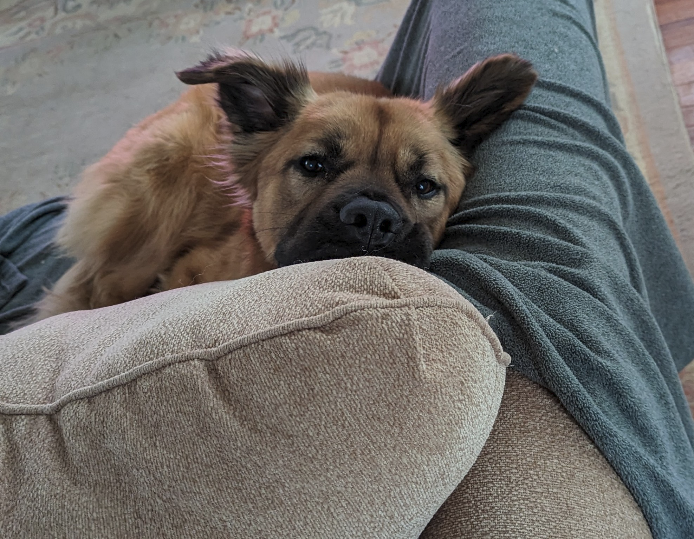
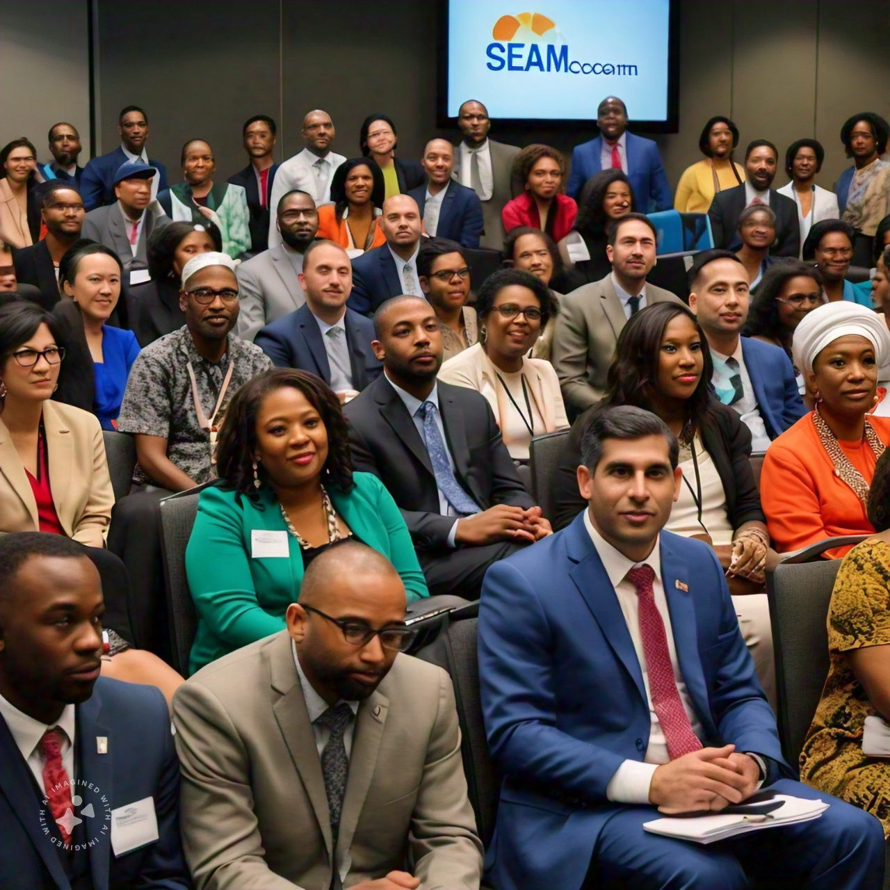
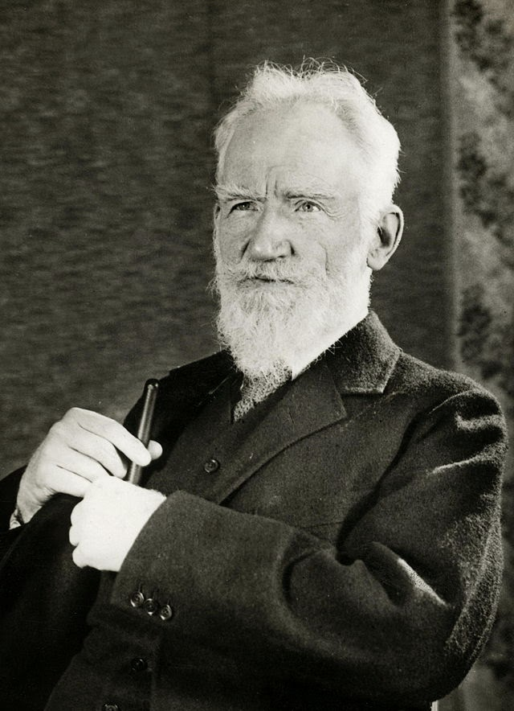
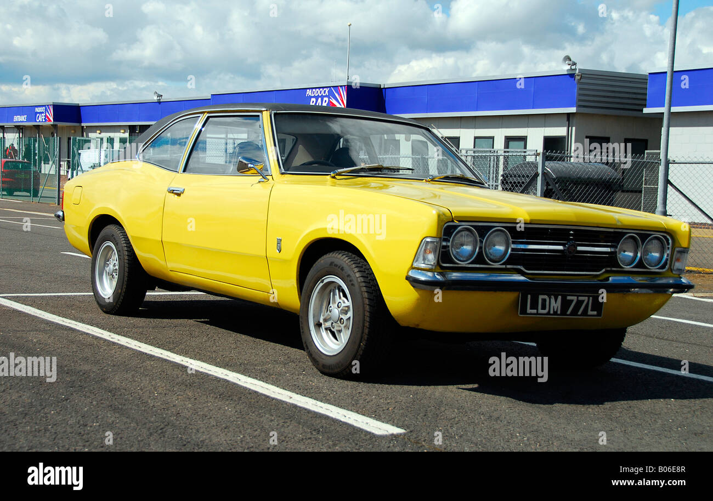
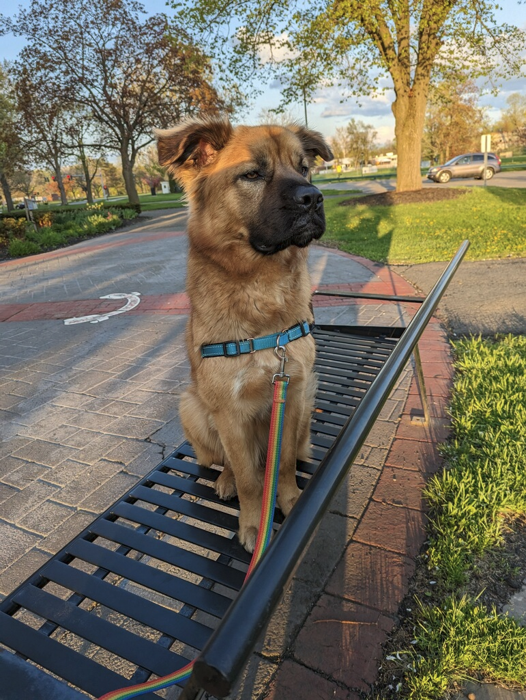
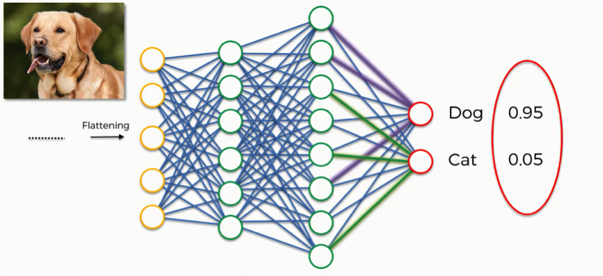

The members of State Education Association Communicators (SEAComm) are employed by state affiliates of the National Education Association (NEA) with primary assignments in internal and/or external communication. Membership also includes communications staff of local affiliates of NEA, staff of state or local affiliates whose duties include internal/external communication, and staff who work in communications at NEA.

The members of State Education Association Communicators (SEAComm) are employed by state affiliates of the National Education Association (NEA) with primary assignments in internal and/or external communication. Membership also includes...


For example, What kind of dog is Rufus?


Created by mbod.